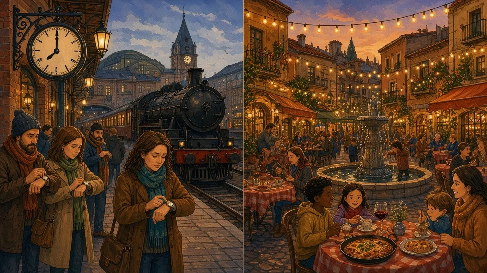

Germans are always on time and Spaniards are always late — or are they? The truth involves railways, a dictator's clock and very late dinners.
Europe · Time & punctuality · Lesson 2 of 7
🌍 World map · ← Around the World: Europe · ← Where Do Stereotypes Come From? · Blunt Dutch, Polite British? → · 🌱 Easier version (A2)

Each new word is hidden in a sentence. Read it aloud and say what you think the bold word means from the rest of the sentence — then reveal it and see how close you were.
Credit: Matt Joseph, credited creator · via Wikimedia Commons, CC BY-SA 4.0
Read each part. After it, there's a quick comprehension check (try the questions from memory first), then one thing to discuss.
Pünktlichkeit — punctuality — is often called a German virtue, and many Germans do arrive exactly on time for meetings and appointments. Arriving late without warning can seem disrespectful. However, the country's trains tell a different story: in 2024 Deutsche Bahn reported that only about 62% of its long-distance trains arrived on time, so delays are part of everyday German life, and many Germans complain loudly about them.
1. What is Pünktlichkeit?
2. What surprising fact challenges the stereotype?
1. Punctuality.
2. Only about 62% of DB long-distance trains were on time in 2024.
Spain has a famous late rhythm: lunch often around 2 or 3 p.m. and dinner at 9 or 10. Part of the reason is the clock itself. In 1940 Franco moved Spain onto Central European Time, in line with Germany, although geographically most of Spain lies level with Britain and Portugal. So "9 p.m." in Madrid is, by the sun, closer to 8. Despite the late meals, the classic afternoon siesta is now rare for most working people in cities.
1. Who changed Spain's time zone, and when?
2. Is the siesta still common in cities?
1. Franco, in 1940.
2. No — it is rare for most working people.
The anthropologist Edward T. Hall described "monochronic" cultures, which treat time as a line of tasks, and "polychronic" ones, which treat it as flexible and focus on people and relationships. Germany is usually placed nearer the first, Spain nearer the second. Yet in both countries business meetings generally start on time; the flexibility is more common in social life, where arriving a little late to a dinner party can even be polite.
1. What is a monochronic culture?
2. Where is flexibility with time most common in Spain?
1. One that treats time as a line of tasks, one at a time.
2. In social life.
A stereotype and the reality rarely match. To hold two ideas at once, English uses contrast linkers.
Complete each sentence about Punctual Germans, Late Spaniards?. Use the word in brackets.
1. Germans value punctuality, their trains are often late. (Although / Despite)
2. eating late, many Spaniards start work early. (Despite / Although)
3. Spain is level with Britain. , it uses Central European Time. (However / Although)
1. Although
2. Despite
3. However
1. the stereotype, business meetings in Spain usually start on time. (In spite of / Even though)
2. the siesta is famous, few city workers take one. (Even though / Despite)
3. Rewrite with "despite": The trains were late, but he arrived on time.
1. In spite of
2. Even though
3. Despite the late trains, he arrived on time.
Hold on to this — you'll need it in the Speak tab.
Stereotypes about time often grow from real differences in social rules, then get exaggerated into personality: "flexible about dinner parties" becomes "always late", and "strict about appointments" becomes "obsessed". Climate, working hours, and even time zones shape daily rhythms more than character does.
This is the heart of the lesson — do all of it out loud. The timer is there to keep you going: fill the time with detail rather than escaping it.
Tell the story of Punctual Germans, Late Spaniards? in your own words, as if to a friend who believes the stereotype. Move through the arc: Pünktlichkeit → train delays → late meals → Franco's clock → siesta → monochronic and polychronic.
Use today's grammar at least three times, and work in at least five key words (punctual, delay, time zone, siesta, flexible, deadline, monochronic, polychronic).
"Being late is always disrespectful." Discuss.
Tell a story from your own world — work, family, the news — that connects to this topic. Stuck for an idea? Pick one of these and run with it:
🌍 World map · ← Around the World: Europe · ← Where Do Stereotypes Come From? · Blunt Dutch, Polite British? → · 🌱 Easier version (A2)